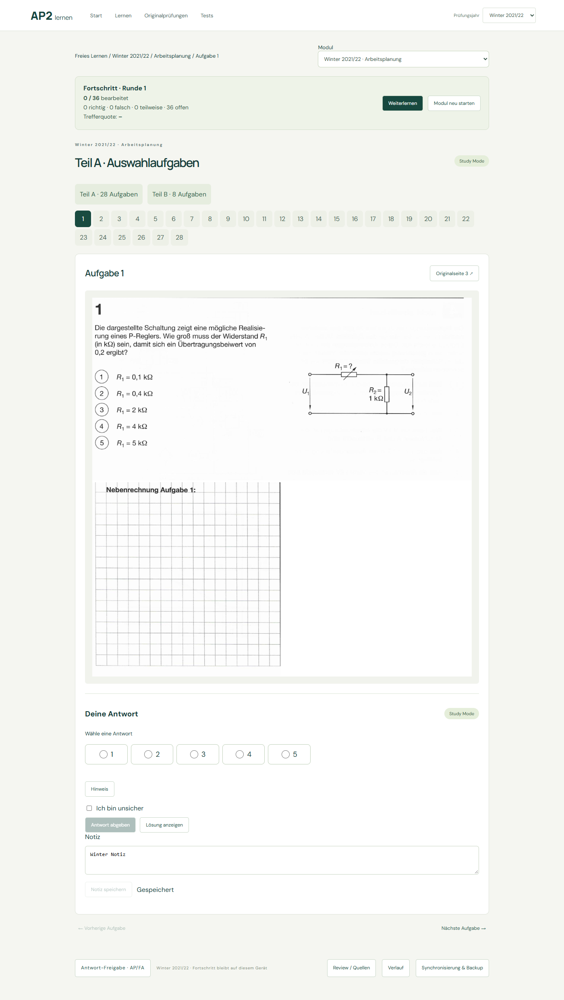
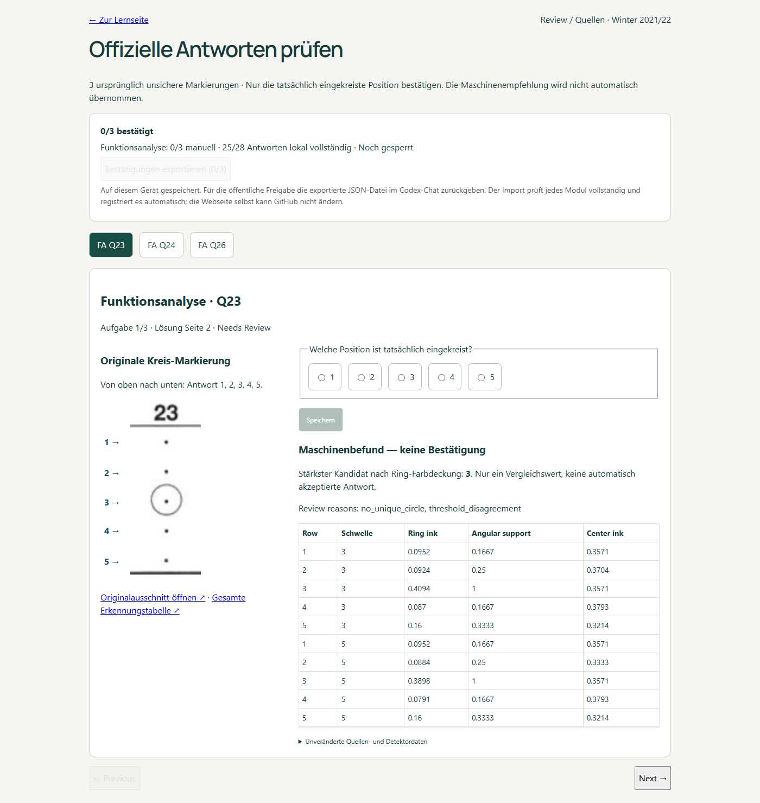
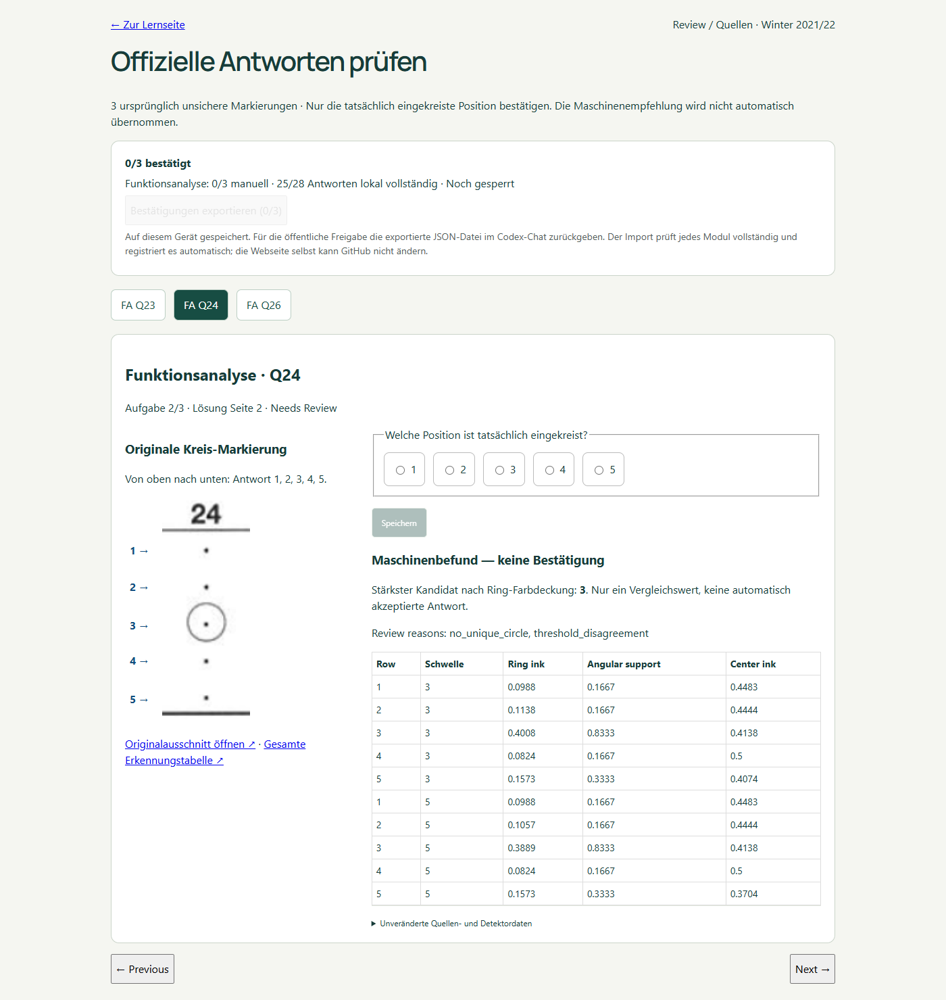
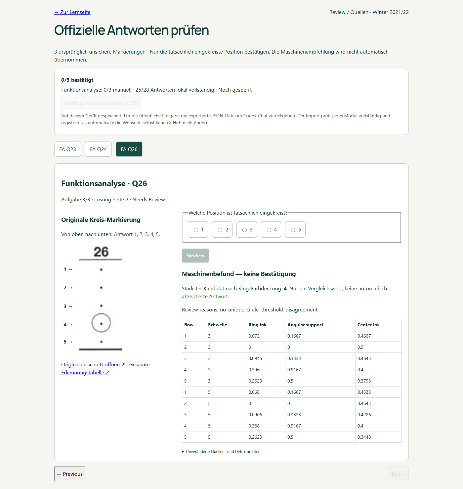
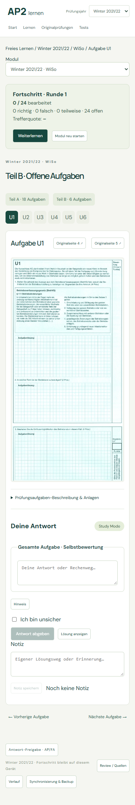

Alle drei Module freigegeben. FA Q23=3, Q24=3, Q26=4 manuell bestätigt und gesperrt.
Archiv der Quellenprüfung → · Arbeitsplanung lernen · WiSo lernen
| Modul / vollständige Galerie | Aufgaben | MC | U Lösungen | Status | Review | Neue Aufgabenseiten |
|---|---|---|---|---|---|---|
| Arbeitsplanung | 36 | 28/28 | 8 | production | — | 23 |
| Funktionsanalyse | 36 | 28/28 | 8 | production | — | 27 |
| WiSo | 24 | 18/18 | 6 | production | — | 15 |
80 neue Seiten: AP23 + FA27 + WiSo15 + Lösung15. Alte PDF-Scans:0. Wiederholung:12 Schritte übersprungen.
Bestehende portrait-explicit-regions, official-ring-grid und U-Extraktion wiederverwendet. Keine fehlenden Anlagen. Keine eigenständige Korrektur/Berichtigung im bereitgestellten Archiv gefunden.
Die Anlage auf Seite26 misst842×1188 Punkte. Die ursprüngliche Konfiguration überschritt den unteren Papierrand um1,969 Punkte. Nach ausdrücklicher Benutzerfreigabe wurde ausschließlich der Bereich außerhalb des Papiers abgeschnitten. Alter Entwurf, Fehler, Gates und Audit-Ereignisse bleiben erhalten. Neue Verarbeitungsversion; keine bestehende Produktionsidentität ersetzt.
Ursprünglicher Fehler · Exakte Revision · Benutzerbestätigung
FA U3/U4 und U7/U8 sowie WiSo U1/U5 enthalten ausdrücklich zugeordnete Fortsetzungen. AP U6/U7 teilen die originale Getriebeanlage. WiSo U4 bleibt in der Orientierung der Originalseite.
Unveränderte alte Quellen / Wiederaufnahme · Lernen / Prüfung / Jahresfilter · Fortschritt / Notizen / Mobil




